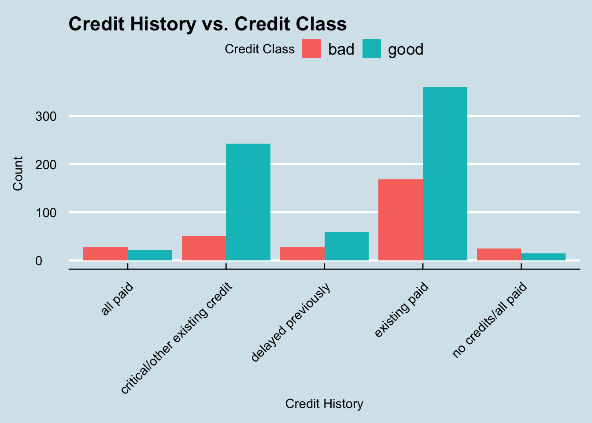
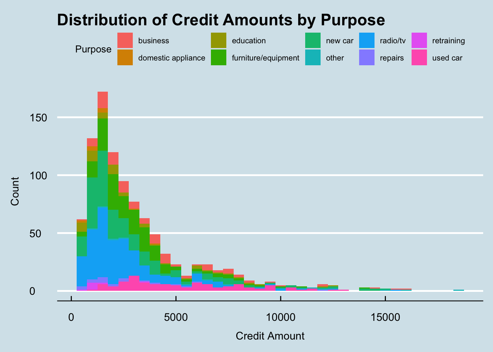
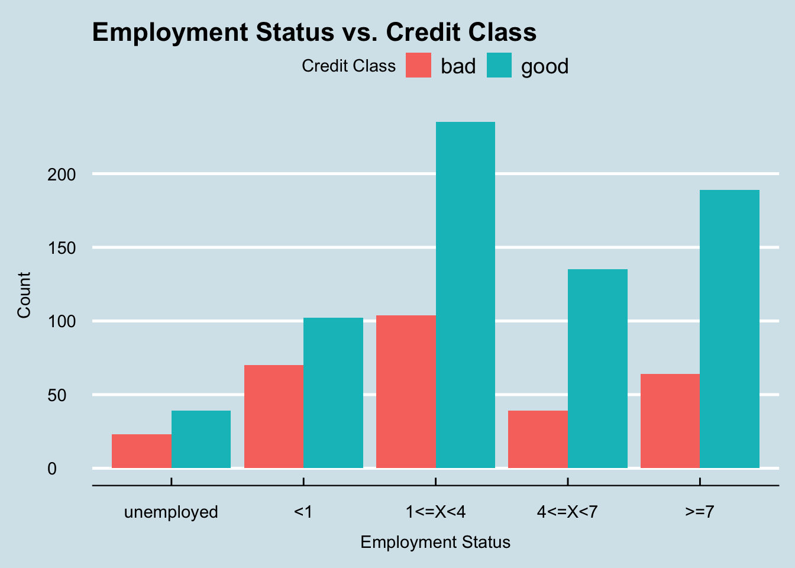
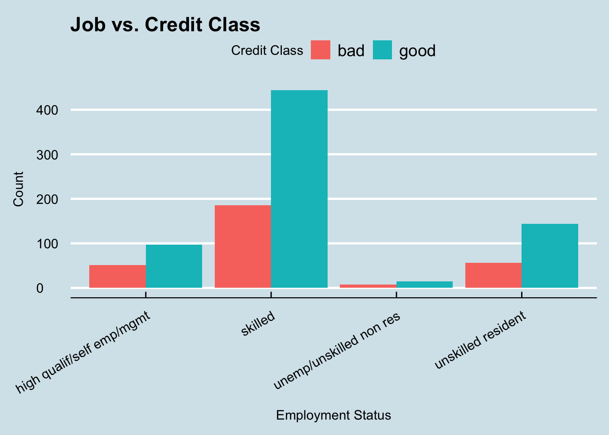
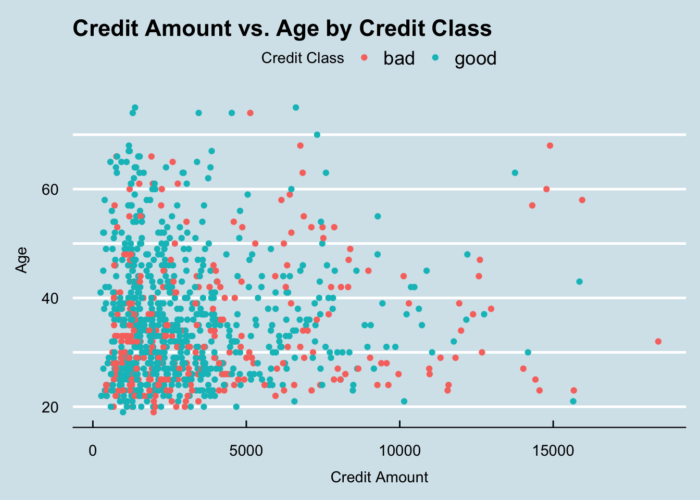

library(tidyverse)
library(ggthemes)
knitr::opts_chunk$set(echo = TRUE, warning=FALSE, message=FALSE)Final Project Assignment: Matthew Weiner
final_Project
Matthew_Weiner
Exploring Credit Behavior and Risk Assessment
Part 1. Introduction
The dataset I chose to use for this final project is callled credit_customers and was found on the website Kaggle.com. The link to the specific dataset can be found here. Unfortunately the provider of the dataset did not release the source of the data, however based on the contents it is likely from some sort of credit agency. The author of this specific dataset is Jan van Rijn who is an assistant professor at Leiden University. This data was also collected starting on April 5, 2014 with no end date mentioned.
Each row in the dataset represents a customer who is attempting to get approved for some sort of credit loan. The columns all are different features of the customer which could be used to determine if the customer is a good or bad risk for this loan.
Based on this dataset, the main research question we want to answer is how do different factors about an applicant affect whether or not the applicant is classified as a good or bad risk by the credit agency. We can then break this down into smaller sub-questions such as understanding the relationship between credit history and creditworthiness, analyzing the distribution of credit amounts based on different purposes, investigating the impact of employment status on creditworthiness, and examining correlations between credit amount and customer age.
In order to answer these sub questions we will use multiple different variables and types of visualizations. To answer the first one we can use the credit_history and class variables. We can then use the credit_amount and purpose variables to understand the distribution of credit amounts and understand the trends of the purposes as the credit amounts change. Then we can use employment, job, and class to investigate if there is any correlation between the applicant’s job and their creditworthiness. Finally we can use credit_amount, age, and class to view the relationship between the amount of credit being requested and the age of the applicant.
This question is important for us to answer as it provides valuable insights into customer credit behavior, risk assessment, and ensuring fairness in applicant evaluation. These insights can then have real world applications such as to inform decision-making processes, guide business strategies, and contribute to the overall effectiveness and sustainability of credit operations.
Part 2. Describe the data set(s)
library(readr)
data <- read_csv("MatthewWeiner_FinalProjectData/credit_customers.csv") dim(data)[1] 1000 21length(unique(data$class))[1] 2table(data$class)
bad good
300 700 head(data)We can now see that there are 21 variables and 1000 entries. We can also see here that there are only 2 classifications of the the credit applicant: good and bad. From the head() function, we can see the layout of each case and can understand how each row will represent a different credit application.
We can view the summary statistics of all the columns which are of type double in the dataset:
library(dplyr)
summary(select_if(data, is.double)) duration credit_amount installment_commitment residence_since
Min. : 4.0 Min. : 250 Min. :1.000 Min. :1.000
1st Qu.:12.0 1st Qu.: 1366 1st Qu.:2.000 1st Qu.:2.000
Median :18.0 Median : 2320 Median :3.000 Median :3.000
Mean :20.9 Mean : 3271 Mean :2.973 Mean :2.845
3rd Qu.:24.0 3rd Qu.: 3972 3rd Qu.:4.000 3rd Qu.:4.000
Max. :72.0 Max. :18424 Max. :4.000 Max. :4.000
age existing_credits num_dependents
Min. :19.00 Min. :1.000 Min. :1.000
1st Qu.:27.00 1st Qu.:1.000 1st Qu.:1.000
Median :33.00 Median :1.000 Median :1.000
Mean :35.55 Mean :1.407 Mean :1.155
3rd Qu.:42.00 3rd Qu.:2.000 3rd Qu.:1.000
Max. :75.00 Max. :4.000 Max. :2.000 These statistics give us a good idea of the min, max, mean, and median for many of the important variables that we will later use in our analysis such as the credit_amount variable which represents how much money, in US dollars, the applicant is requesting for their loan, and age which, as the name implies, represents the age in years of the applicant.
This dataset contains information about customers’ credit applications. It has 21 columns (variables) and 1000 rows (cases) where each row represents a unique credit application. Each case contains important information about the applicant’s current financial status such as their employment status, existing credits, their job, credit history, savings status, housing, and amount of property owned by the applicant. The dataset also includes more information about the applicant that isn’t necessarily directly related to their financial situation such as their age, if they own a telephone, the number of dependents they have, and their current relationship status. Finally, each applicant is also given a classification in the class variable in which each person is given either a good or bad risk assesment by the credit loan agency. In this scenario, a good risk would indicate that the loan agency would be likely to provide the applicant with their loan, while a bad risk applicant would likely be rejected.
3. Visualization
Tidy Data
Before creating our visualizations to address the research questions, we need to ensure that our data is formatted in a way that is most suitable for them.
The first thing we can check for is missing values.
sum(is.na(data))[1] 0The above code block indicates to us that there are no missing values in our dataset so we don’t have to consider how to handle those cases.
Another thing we can notice is that the values for the checking_status variable are in alphabetical order instead of in order of increasing value.
table(data$checking_status)
<0 >=200 0<=X<200 no checking
274 63 269 394 We can fix this by performing the following code:
data$checking_status <- factor(data$checking_status,
levels = c("no checking","<0", "0<=X<200", ">=200"))
#sanity check
table(data$checking_status)
no checking <0 0<=X<200 >=200
394 274 269 63 The variables savings_status and employment also have this same issue which we can fix below.
table(data$savings_status)
<100 >=1000 100<=X<500 500<=X<1000
603 48 103 63
no known savings
183 data$savings_status <- factor(data$savings_status,
levels = c("no known savings","<100", "100<=X<500","500<=X<1000", ">=1000"))
#sanity check
table(data$savings_status)
no known savings <100 100<=X<500 500<=X<1000
183 603 103 63
>=1000
48 table(data$employment)
<1 >=7 1<=X<4 4<=X<7 unemployed
172 253 339 174 62 data$employment <- factor(data$employment,
levels = c("unemployed","<1","1<=X<4","4<=X<7",">=7"))
#sanity check
table(data$employment)
unemployed <1 1<=X<4 4<=X<7 >=7
62 172 339 174 253 Now that the data has been tidied up we can start creating our visualizations to better answer our research questions.
Visualization #1
The first question we want to answer is whether or not credit history has a role in determining if an applicant is a good or bad risk.
We can create a bar graph to represent this relationship. A bar graph would be the best option to use here as both attributes being measured are categorical which is a great use case for this type of visualization. Also it will better let us see the differences between the two credit classes.
library(ggplot2)
ggplot(data, aes(x = credit_history, fill = class)) +
geom_bar(position = "dodge") +
labs(x = "Credit History", y = "Count", fill = "Credit Class") +
ggtitle("Credit History vs. Credit Class") +
theme_economist() +
theme(axis.text.x = element_text(angle = 45, vjust = 1,
hjust = 1),
axis.title.y = element_text(margin = margin(r=10)))
As we can see in this graph, the most common credit history to have was existing paid. That makes sense as most people applying for loans likely have had them before. We can also see that this credit history category is by far the most common for people who are deemed a bad credit risk. However, any applicant who falls under the category all paid or no credits/all paid are actually more likely to be classified as a bad risk rather than a good one.
Visualization #2
The second question we want to answer is: what is the distribution of credit amounts and how does it vary across different purposes?
The best option to visualize this would be with a histogram. Histograms are great at allowing us to view the distribution of continuous variables (such as credit_amount) by grouping these values into bins. Also, histograms allow us to easily see outliers, i.e. cases which fall way outside the norm.
ggplot(data, aes(x = credit_amount, fill = purpose)) +
geom_histogram(binwidth = 500) +
labs(x = "Credit Amount", y = "Count", fill = "Purpose") +
ggtitle("Distribution of Credit Amounts by Purpose") +
theme_economist() +
theme(legend.text = element_text(size = 8),
legend.title = element_text(size = 10),
axis.title.y = element_text(margin=margin(r=10)),
axis.title.x = element_text(margin = margin(t=10)))
This histogram gives us a great insight into the relationship between credit amounts and the purpose of the loan. The first thing we can notice in this graph is that the majority of credit amounts are less than $5,000. We can also notice that in the lower credit amount range, there a lot more different purposes with radio/tv and a new car being two of the most popular purposes. However, as the credit amount increases, we see that buying a used car is still almost as common as it was in the lower ranges. This could indicate that there a lot of different types of people interested in buying used cars, not just people looking for cheap vehicles. One of the only other purposes in this high price range is people looking to buy new cars. This would make sense as many new cars often cost a lot more which would require people to get credit approved for a loan.
Visuaization #3
The next question we are interested in answering is how does the applicant’s employment status affect their creditworthiness.
For this graph we will again be using a bar graph as these allow us to better visualize categorical data and compare the two credit classes easier.
ggplot(data, aes(x = employment, fill = class)) +
geom_bar(position = "dodge") +
labs(x = "Employment Status", y = "Count", fill = "Credit Class") +
ggtitle("Employment Status vs. Credit Class") +
theme_economist() +
theme(axis.title.y = element_text(margin = margin(r = 10)),
axis.title.x = element_text(margin = margin(t = 10)))
From this graph we can see that applicant’s who have less than one year of employment or are unemployed have the highest probability of being classified as a bad risk, while applicants who have more than 4 years appear to have a much higher likelihood of being a good risk. However, this graph only takes into account the number of years the applicant worked but does not consider the type of job that they have. Because of this, it may also be helpful to investigate that aspect as well.
ggplot(data, aes(x = job, fill = class)) +
geom_bar(position="dodge") +
labs(x = "Employment Status", y = "Count", fill = "Credit Class") +
ggtitle("Job vs. Credit Class") + theme_economist() +
theme(axis.title.y = element_text(margin = margin(r = 10)),
axis.title.x = element_text(margin = margin(t = 10)),
axis.text.x = element_text(angle = 30, vjust = 1,
hjust = 1))
This graph actually is very suprising as it does not appear that there is any correlation between the type of job and the credit class that the applicant falls under. All jobs have a seemingly similar ratio of good and bad applicants which is an interesting discovery. This could indicate to us that the credit agency belives the number of years worked is a better indicator of risk than the type of job held by the applicant.
Visualization #4
The final question we want to answer is if there is any correlation between the credit amount and the applicant’s age in regards to their chances of being a good or bad risk.
For this visualization I chose to use a scatter plot. These are excellant graphs for bivariate visualizations as they allow us to compare multiple variables at once and easily view any trends in the data.
ggplot(data, aes(x = credit_amount, y = age, color = class)) +
geom_point() +
labs(x = "Credit Amount", y = "Age", color = "Credit Class") +
ggtitle("Credit Amount vs. Age by Credit Class") +
theme_economist() +
theme(axis.title.y = element_text(margin = margin(r = 10)),
axis.title.x = element_text(margin = margin(t = 10))) +
scale_y_continuous(breaks = seq(0, max(data$age), 10),
labels = function(x) ifelse(x %% 20 == 0, x, ""))
There’s a few things that we can notice in this graph. The first being that the majority of “good” applicants, regardless of age, have credit amounts that are less than $5,000. We can also notice that the majority of applicants who are between the ages of 20 and 30 and are requesting credit amounts above $10,000 are much more likely to get classified as bad than those who are requesting similar amounts but are over the age of 30. This could indicate that the credit agencies value applicants who are more mature and have had more time to build up their credit. The final important aspect to notice in this graph is that there are far more applicants requesting large credit amounts (above $10,000) who are under the age of 50 than those above. This shows that as people are getting older and closer to retirement age, they are less likely to want to make large purchases that require a credit loan.
Conclusion
Through this investigation into the credit_customers dataset we were able uncover many important aspects that can lead to a credit agency’s decision in whether an applicant is a good or bad risk. The dataset provides insights into the credit behavior of customers, including their credit history, employment status, and purpose for seeking credit. These factors play a crucial role in assessing credit risk and making informed lending decisions. The analysis also revealed variations in credit amounts based on different attributes such as the applicant’s age, with individuals in certain age ranges requesting higher or lower credit amounts. Additionally, the investigation identified a small correlation between credit class and employment status, with the length of the employment being seemingly more important than the type of job the applicant worked. Furthermore, the analysis showcased the benefits of using visualizations such as bar graphs, histograms, and scatter plots to gain insights into the dataset and communicate findings effectively.
The analysis into the credit_customers dataset provided valuable insights into credit behavior and risk assessment. However, limitations exist, including the dataset’s representativeness and the need for longitudinal studies. As this dataset only contained 1000 cases, we would need much more data in order to make more accurate assessments of the trends we discovered. Future analyses could explore additional variables, such as income level, and examine more interactions between variables. Incorporating credit outcomes and external factors like economic conditions would enhance the credit risk assessment. Furthermore, techniques like regression analysis and predictive modeling could also give us greater insights into the credit score system. Despite these limitations, the findings contribute to understanding credit behavior and offer opportunities for further research to refine lending practices and risk assessment methodologies.
Bibliography
R Core Team. (2023). R: A Language and Environment for Statistical Computing. R Foundation for Statistical Computing. Retrieved from https://www.R-project.org/
van Rijn, J. (2023). Credit_risk_customers. Kaggle. Retrieved from https://www.kaggle.com/datasets/ppb00x/credit-risk-customers